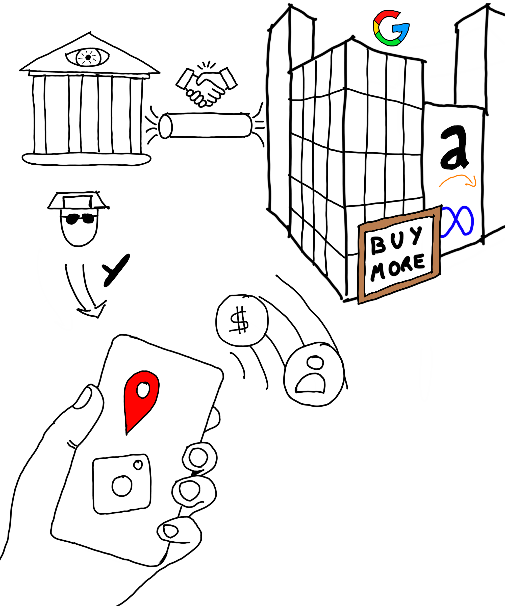

Alternatives
a les grans tecnologiques
Alternatives a les grans tecnologiques
En esta entrada explique els problemes que suposa a nivell personal i social fer us de serveis aparanment gratuits oferts per les grans tecnologiques. Propose alternatives amb diferents graus de dificultat/independencia.
Timeline of the Foundation
of Quantum Mechanics
Timeline of the Foundation of Quantum Mechanics
In this blog post I present the timeline of Quantum Mechanics from its inception and the paradoxes that it came with, up to the resolution of some og them and the current status.